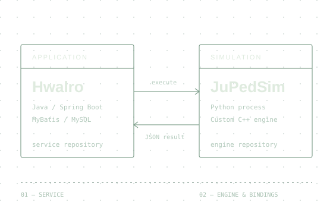

HWALRO活路

보행자 대피 시뮬레이션APPLICATION ↔ ENGINE
01공간 안전 시뮬레이션2026
활로 Hwalro
공간의 배치가 바뀌면,
대피 흐름은 어떻게 달라질까.
팝업·전시·행사의 도면과 배치안을 바탕으로 대피 시간·밀집도·병목을
사전에 검토하는 서비스입니다.
- 주요 기여
- 시뮬레이션 구동·취소·병렬 실행, 출구 검증과 탈출 판정
- 구현 구조
- Java 서비스와 Python 엔진 분리, 커스텀 JuPedSim 연동
02성우하이텍 · 실무 프로젝트2024–2026
인도법인 전자결재·목표이익 오픈
현업의 업무 흐름을 실제 운영 시스템으로.
법인 업무에 맞는 결재 프로세스와 목표이익 관리 기능을 정리하고,
운영 환경에서 사용할 수 있도록 오픈 대응을 수행했습니다.
- 담당 업무
-
그룹웨어·e-Accounting·SAP FI 개발, 현업 요구사항 조율 및 오픈
대응
- 업무 환경
- ASP.NET·Blazor 웹 시스템과 SAP·ABAP 연계
03HNIX · 인턴 프로젝트2023
HN SmartHome ChatBot 2.0
서로 다른 스마트홈 장치를 하나의 대화로.
장치별 API나 제어 프로토콜을 몰라도 챗봇으로 장치를 조회·제어할 수
있도록 SmartHome/SmartIoT 미들웨어와 연결했습니다.
- 구현 내용
- OAuth/JWT 사용자 식별, API 응답·대화 이력 저장
- 설계 포인트
- Adapter/Handler로 장치별 제어 로직 분리
더 많은 작업
대표 프로젝트 3개에 이어, 나머지 6개의 개발 기록입니다.
04
jupedsim-hwalroC++ 엔진 수정부터 Python 패키지 배포까지
오픈소스 보행자 시뮬레이터 JuPedSim 1.4.2를 Hwalro에 맞게
확장한 포크입니다. guarded simulation의 위치 조정을 위해 C
API·C++ 구현·pybind11 바인딩·Python position setter를
연결했습니다.
CPython 3.12용 Windows x64 및 macOS arm64/x64 wheel을 자동
빌드·검증하고, 태그 기반 GitHub Release로 배포합니다.
GitHub ↗
05
hi-eatingAI 추천·메시징을 연결한 건강식품 커머스
건강식품 및 식단 추천을 주제로 한 팀 프로젝트입니다.
상품·주문·리뷰·프로모션 데이터를 다루고, AI 기반 타깃
선정·추천·메일 생성 흐름과 메시징을 연결했습니다.
Spring AI의 Ollama Chat·Embedding, MCP Server WebMVC와
RabbitMQ/AMQP를 활용했습니다.
GitHub ↗
06
예약 메일 발송 시스템서비스 책임을 분리한 비동기 메일 발송
인증·예약·스케줄러·메일 워커를 분리한 MSA 프로젝트입니다. 예약
시각이 되면 스케줄러가 RabbitMQ로 이벤트를 발행하고, 워커가
메시지를 소비해 메일을 발송합니다.
- 예약 등록
- 스케줄러
- RabbitMQ
- 메일 워커
GitHub ↗
07
hi-eating-crawler외부 상품 데이터를 서비스 스키마에 맞게 적재
hi-eating의 초기 상품 데이터를 만드는 Java Maven 기반
크롤러입니다. 외부 상품 목록 API에서
카테고리·상품·이미지·옵션을 수집하고 서비스 DB 스키마에 맞춰
Oracle에 적재했습니다.
GitHub ↗
08
Hyundai-HR업무 흐름·권한·데이터를 함께 고려한 HR 프로젝트
HR 업무 시스템을 주제로 진행한 팀 프로젝트입니다. 기능
브랜치·PR·코드 리뷰 기반으로 협업하고, 팀 단위 코드 관리와
충돌 해결을 경험했습니다.
GitHub ↗
09
Web Visit History Visualization흩어진 웹 탐색 기록을 하나의 트리로 복원
Chrome Extension 졸업작품입니다. 탭 생성·URL 변경·창 이동
이벤트를 추적해 탐색의 부모·자식 관계를 구성하고, 팝업과 검색
결과 패널에서 현재 탐색 흐름을 시각화했습니다.
GitHub ↗
02 / EXPERIENCE
실무에서 배운 것들.
2024.09 — 2026.04실무 경력
성우하이텍 IT개발팀 · 매니저
그룹웨어 · e-Accounting · SAP FI 개발·운영
제조업의 실제 업무 프로세스를 이해하고, 현업과 요구사항을 조율하며
기업 업무 시스템을 개발했습니다.
-
ASP.NET·Blazor 기반 그룹웨어 및 e-Accounting 업무 시스템 개발
- SAP FI 업무와 ABAP 기반 연계·개발 수행
- Oracle·MSSQL을 활용한 실무 데이터 처리
- 인도법인 전자결재·목표이익 시스템 오픈 및 현업 대응
관련 프로젝트 ↑
2023.08 — 2023.12인턴십
HNIX 융합기술연구소 · 인턴
SmartHome / SmartIoT 미들웨어 기반 챗봇 개발
장기현장실습에서 사용자 인증부터 이기종 장치 제어, 대화 이력
저장까지 서비스의 전체 연결 흐름을 구현했습니다.
- HN SmartHome ChatBot 2.0 개발
- OAuth/JWT 사용자 식별과 API 응답·대화 이력 DB 저장
- Adapter/Handler 구조를 통한 장치별 제어 로직 분리
관련 프로젝트 ↑
03 / TOOLKIT
기술은, 쓰임과 함께.
실무와 프로젝트에서 사용한 기술입니다.
프론트엔드 · 빌드 · 테스트 · 협업 도구
Frontend JavaScript · HTML/CSS · Thymeleaf ·
Bootstrap 5 / Icons · Vue.js / Vuetify
Build & Quality Gradle · Maven · JUnit 5 ·
Spotless · Prettier · Spring Validation · Lombok · Oracle JDBC
Collaboration & Delivery Git / GitHub · GitHub
Actions · Chromium
04 / BACKGROUND
배움과 그 이후.
학력 · 교육
EDUCATION
2026수료
현대퓨처넷 채용연계형
MSA FullStack 개발자 교육
KOSA · 2026.04 시작
Java·Spring Boot·Oracle·RabbitMQ 기반 프로젝트를 수행하며 서비스
설계와 백엔드 개발 경험을 확장했습니다.
✳
AWARD
최종 프로젝트 최우수상
현대퓨처넷 채용연계형 교육
2025수료
오픈소스컨트리뷰션아카데미
Git 활용 및 Chromium 과정을 수료했습니다. Chromium AUTHORS에
Jaewoo Lee로 등재되어 있습니다.
Chromium AUTHORS 확인 ↗ (새 탭)
2024.02졸업
울산대학교
IT융합전공
자격증
CERTIFICATIONS
- 정보처리기사
- 한국산업인력공단
- SQLD
- 한국데이터산업진흥원
- ISTQB CTFL
- ISTQB
- 초경량비행장치조종자
- 한국교통안전공단
어학
LANGUAGE
TOEIC Speaking
ETS · 2026.07.26
IH